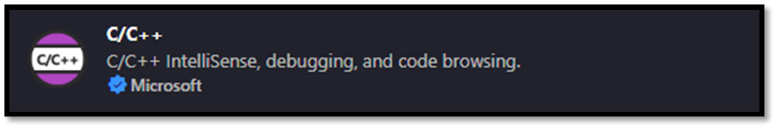
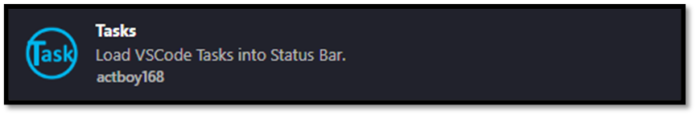
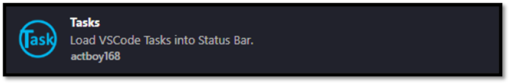
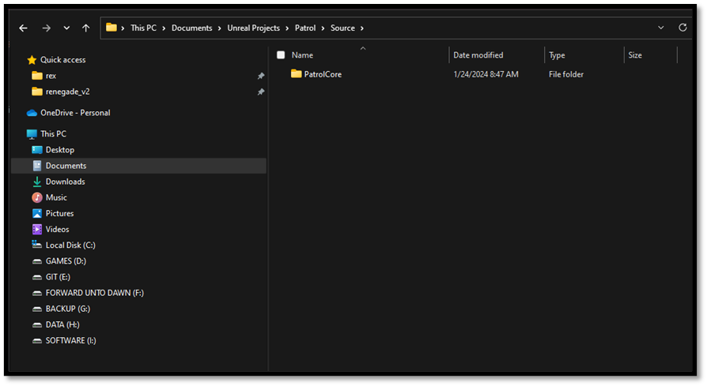
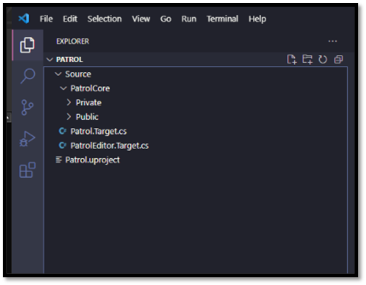
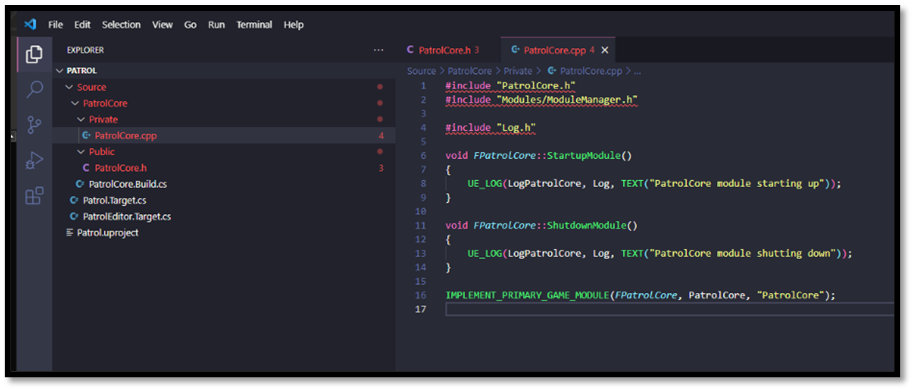
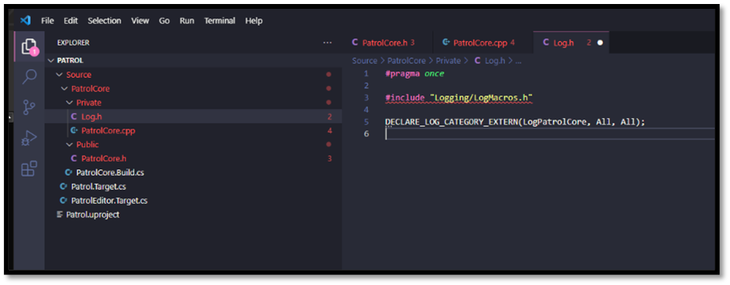
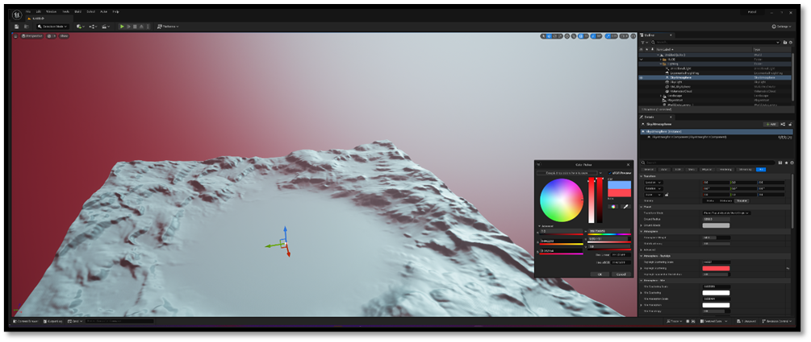
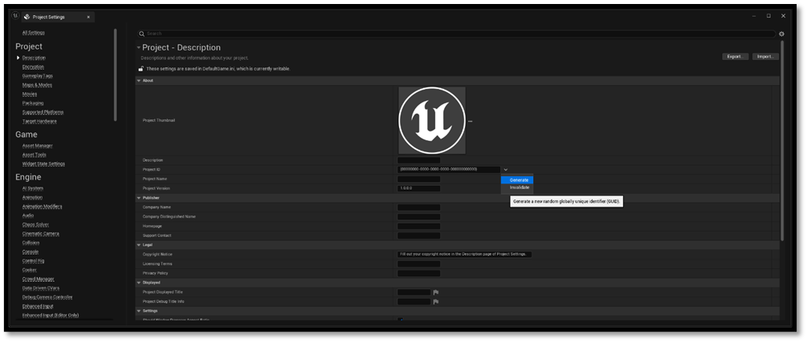

Introduction
You don’t need to use Visual Studio to write game code in Unreal. You can generate a solution file, crack it open, and start writing code. That’s the officially supported workflow, and it’s a perfectly valid approach. It’s great for beginners since it’s an easy way to get started. However, I’ve found it also leads a lot of people to miss out on an opportunity to form an understanding of how an Unreal project fits together and how the build system works. Let’s face it, the Visual Studio experience is not everybody’s cup of tea.
Within this document I will show you how you can create an Unreal project from scratch with just a text editor. I will explain how we can build and run that project from the command line. After going through this document I hope that you get a basic understanding on what happens when you build an Unreal project. If down the line you are ever faced with a wall of cryptic error messages, you’ll have a better idea of how to diagnose the problem and get moving again.
Development Tools
Before we dive into the exciting world of game engines and compilers, let's talk about two essential tools every developer needs: a trusty text editor and a reliable terminal. And guess what? With VS Code, you get both bundled in one neat package! Now, I know there are alternatives out there like Sublime Text and Cmder, but for this walkthrough, I'll be sticking with VS Code—it's my go-to choice when working with Unreal Engine.
Why VS Code, you ask?
Let me break it down for you. VS Code doesn't clutter your workspace, it's highly customizable to match your preferences, packed with awesome features, and incredibly lightweight and responsive. Even when dealing with massive codebases like Unreal, it won't drag you down.
What about Visual Studio?
Unreal Engine is designed to integrate smoothly with Visual Studio, allowing you to make code changes in your projects “quickly” and easily, and “immediately” see results upon compilation but it's essential to understand that for Unreal Engine, it serves primarily as a frontend. Unreal doesn't utilize the Visual Studio “toolset” directly for building; instead, it relies on a batch script that invokes builds for your target platform. However, the Visual Studio installation comes with certain features that are required to invoke builds ( on Windows ) so in order to use VS Code we have to go through the process of installing Visual Studio.
Installing VS Code

Here's how to get started:
- Head over to the official VS Code website and download the installer.
- Run the installer and follow the setup instructions.
- Once installed, let's beef up the IDE with some essential extensions:
- C++ IntelliSense: Your coding buddy that provides smart suggestions and auto-completions.
- Visual Studio Keymaps: For those familiar shortcuts to keep your workflow smooth.
- Tasks: We'll get into this later.

 

VS Code - Unreal Snippets
Make your life easier by setting up Unreal snippets in VS Code:
- Grab or clone the Unreal Snippets repository onto your machine.
- Navigate to
%APPDATA%/Code/User/snippets. - Paste the repository contents (excluding the .git folder) into this directory.
- Restart VS Code (if it's open) to apply the changes.

[Optional] VS Code - Theme
Add a touch of personality to your coding environment:
- Customize your VS Code with a sleek theme like Dracula.
- Enhance it further with vscode-icons for some visual flair.


[Optional] VS Code - Launch from Windows Explorer (Windows Only)
For seamless integration, follow these steps:
- Open the Start menu and search for "environment variables."
- Access the "Edit the system environment variables" dialog.
- In the environment variables section, edit the PATH variable.
- Add the path to your VS Code installation directory (typically located at
C:\Users\${username}\AppData\Local\Programs\Microsoft VS Code).
- Open the Task Manager and restart Explorer.exe to finalize the changes (this will refresh everything related to Windows Explorer).

Equipped with these essential tools, you're primed to traverse the intricacies of game development using VS Code. With precision and proficiency, let us embark on this journey into the realm of coding excellence.
Installing Visual Studio

When it comes to installing Visual Studio, it's not as straightforward as opting for the latest version. Unreal Engine has specific requirements regarding the version of Visual Studio and its components. To determine the compatible version, you'll need to consult the release notes corresponding to your chosen version of Unreal Engine. For instance, if you're using Unreal Engine 5.0, refer to the release notes and navigate to the "Build farm" section to identify the officially supported version.

While it's not mandatory to install the exact version specified in the release notes, it's advisable for team collaboration and to minimize potential build issues. However, if you already have a newer version installed, downgrading isn't necessary, but keep in mind potential compatibility issues.
To install Visual Studio, download the installer from the official website and run it. The Visual Studio Installer allows you to select and install various components, including the Visual C++ toolset, debugger, runtime SDKs, and more. Additionally, I recommend installing the .NET workload, as many external tools used within Unreal Engine are written in C#. This ensures compatibility and provides flexibility if you ever need to build these tools from source.


Before proceeding to the next section, verify that the versions of Visual Studio, .NET package, and Windows SDK match the requirements specified in the Unreal release notes. This meticulous approach ensures a smooth development experience and minimizes compatibility hurdles down the line. For more information about setting up Visual Studio and some additional tips and tricks on how to modify Visual Studio as an IDE, you can visit the official documentation of Unreal: Unreal Engine: Visual Studio Setup
Creating an Unreal Project from Scratch
Let's peek behind the scenes to understand how project files and build processes interconnect. Instead of diving straight into the complexities, let me guide you through setting up a new project in Unreal Engine from scratch.
Begin by carving out a cozy space for your project on your disk drive. When it comes to naming your project, simplicity reigns supreme. This name isn't etched in stone as part of your public-facing brand—it merely serves as a convenient identifier. A short codename suffices.
- Set up a folder where we'll work our magic.
- Give your project a name.
- Again, keep it simple, nothing too crazy.
We're gonna start with a .uproject file to lay down the basics and we'll need a Source folder for all our C++ goodness. Inside, we'll organize our code into different modules. Let's call the main one {projectname}{modulename}, where we'll stash all our core gameplay code.
- Drop a .uproject file in the main folder.
- Make a Source folder in there too.

The .uproject File
A .uproject file, short for "Unreal Project File," serves as the entry point and configuration file for an Unreal Engine project. It's a JSON-formatted file that contains essential information about the project, such as its name, description, and the list of modules or plugins it uses. An Unreal Project File is recognized by the UnrealVersionSelector which is stored in the your registry by Unreal when installing Unreal. The following attributes can be found within a .uproject file:
| Property | Description |
|---|---|
| FileVersion | Descriptor version number. |
| EngineAssociation | Specifies the engine to open the project with. Allows for opening the correct engine version when double-clicking on a project file. Differentiates between editor versions for upgrade/downgrade UI flow. For Launcher users, it indicates a stable version like "5.0" or "5.1". For Perforce or Git users, it's left blank, allowing determination of the engine based on the directory hierarchy. For source build users with a foreign project, uses a random identifier for engine mapping. For users with the engine mounted through a Git submodule, can be manually edited as a relative path. |
| Category | Category to show under the project browser. |
| Description | Description to show in the project browser. |
| Modules | List of all modules associated with this project. |
| Plugins | List of plugins for this project, which may be enabled or disabled. |
| TargetPlatforms | Array of platforms that this project is targeting. |
| EpicSampleNameHash | A hash used to determine if the project was forked from a sample. |
| PreBuildSteps | Custom steps to execute before building targets in this project. |
| PostBuildSteps | Custom steps to execute after building targets in this project. |
| Enterprise | Indicates if this project is an Enterprise project. |
| DisableEnginePluginsByDefault | Indicates that enabled by default engine plugins should not be enabled unless explicitly enabled by the project or target files. |
Note:
When project file association is not working properly one can simply run UnrealVersionSelector.exe -fileassociations from the Unreal Engine Binaries. You could refer to the following files for proper debugging capabilities.
For more information about the Project Descriptor please visit the following files:
The following is an example descriptor of an Unreal Project:
{
"FileVersion": 3,
"EngineAssociation": "5.3",
"Category": "",
"Description": "",
"Modules": [
{
"Name": "PatrolCore",
"Type": "Runtime",
"LoadingPhase": "Default"
},
{
"Name": "PatrolGame",
"Type": "Runtime",
"LoadingPhase": "Default"
}
]
}
When the project file is loaded into memory it is stored within a FProjectDescriptor which contains all the information contained within a .uproject file. Each .uproject file when containing source files is accompanied with a list of modules and/or plugins available to the project. These modules (and plugins) have their own set of attributes as specification when and how they should be loaded by the engine, all information is stored within a structure call FModuleDescriptor. The following attributes can be found within a module definition:
| Property | Description |
|---|---|
| Name | Name of this module. |
| Type | Usage type of the module. |
| LoadingPhase | Specifies when the module should be loaded during the startup sequence. |
| PlatformAllowList | List of allowed platforms for the module. |
| PlatformDenyList | List of disallowed platforms for the module. |
| TargetAllowList | List of allowed build target types for the module. |
| TargetDenyList | List of disallowed build target types for the module. |
| TargetConfigurationAllowList | List of allowed build configurations for the module. |
| TargetConfigurationDenyList | List of disallowed build configurations for the module. |
| ProgramAllowList | List of allowed programs for the module. |
| ProgramDenyList | List of disallowed programs for the module. |
| AdditionalDependencies | List of additional dependencies required for building this module. |
Note: For more information about the Module Descriptor please visit the following files:
The following is an example descriptor of a single module: This does not funciton on it's own, it needs to be encapsulated by either an Unreal Project or an Unreal Plugin
{
"Name": "PatrolCore",
"Type": "Runtime",
"LoadingPhase": "Default"
}
Last architectural piece of the Unreal Engine are plugins, due to the complexity of UE plugins I will not go into full detail here rather give you a brief overview of what they are and how to use them. Plugins are collections of code and data that developers can easily enable or disable within the Editor on a per-project basis. Plugins can add runtime gameplay functionality, modify built-in Engine features (or add new ones), create new file types, and extend the capabilities of the Editor with new menus, tool bar commands, and sub-modes. Many existing UE4 subsystems were designed to be extensible using plugins. The main difference between modules and plugins is that plugins (usually) will contain one or more modules, and can also optionally contain their own content. So in a sense they’re a higher level construct than a module. You can see them as a sub-project within your main project so to speak. Each plugin if they have source code will have their own Source folder, with the accompanied Binaries folder that contains the compiled code for that plugin. They can have their own Content folder that contains Assets specific for that Plugin. Last I'll leave you with an overview of some of the more common attributes of a Plugin that you need to be aware of, this data is stored in a structure called FPluginDescriptor, you'll notice that they are quite similar to the ones of an Unreal Project:
| Property | Description |
|---|---|
| FileVersion | Descriptor version number. |
| Version | Version number for the plugin. The version number must increase with every version of the plugin, so that the system can determine whether one version of a plugin is newer than another, or to enforce other requirements. This version number is not displayed in front-facing UI. Use the VersionName for that. |
| VersionName | Name of the version for this plugin. This is the front-facing part of the version number. It doesn't need to match the version number numerically, but should be updated when the version number is increased accordingly. |
| FriendlyName | Friendly name of the plugin. |
| Description | Description of the plugin. |
| Category | The name of the category this plugin. |
| DocsURL | Documentation URL string. |
| MarketplaceURL | Marketplace URL for this plugin. This URL will be embedded into projects that enable this plugin, so we can redirect to the marketplace if a user doesn't have it installed. |
| SupportURL | Support URL/email for this plugin. |
| EngineVersion | Version of the engine that this plugin is compatible with. |
| EnabledByDefault | Whether this plugin should be enabled by default for all projects. |
| CanContainContent | Can this plugin contain content? |
| IsBetaVersion | Marks the plugin as beta in the UI. |
| Installed | Signifies that the plugin was installed on top of the engine. |
| Modules | List of all modules associated with this plugin. |
For more information about Plugins I will refer you to the Official Unreal Documentation about Plugins.
Note: For more information about the Plugin Descriptor please visit the following files:
The following is an example descriptor of an Unreal Plugin
{
"FileVersion": 3,
"Version": 1,
"VersionName": "4.25.0",
"FriendlyName": "Advanced Locomotion System Community",
"Description": "Performance optimized community version of LongmireLocomotion's Advanced Locomotion System V4",
"Category": "Animation",
"CreatedBy": "Doga Can Yanikoglu",
"CreatedByURL": "https://github.com/dyanikoglu",
"DocsURL": "https://github.com/dyanikoglu/ALS-Community",
"SupportURL": "https://github.com/dyanikoglu/ALS-Community/issues",
"EngineVersion": "5.3.0",
"EnabledByDefault": true,
"CanContainContent": true,
"IsBetaVersion": false,
"IsExperimentalVersion": false,
"Installed": false,
"Modules": [
{
"Name": "ALSV4_CPP",
"Type": "Runtime",
"LoadingPhase": "Default",
"AdditionalDependencies": [
"Engine",
"AIModule",
"GameplayTasks",
"PhysicsCore"
]
}
],
"Plugins": [
{
"Name": "Niagara",
"Enabled": true
},
{
"Name": "EnhancedInput",
"Enabled": true
}
]
}
Populating the .uproject file
Now that we understand what a Unreal Project file is and how it is structured let's complete our own.
For those who setup the environment variables, this should open up VS Code within the current directory
- Open VS Code within your project directory
- CTRL + L ( to focus the address bar )
- Type: code .
- Press Enter
For those who have not setup the environment variables, this should open up VS Code within the current directory
-
Open VS Code within your project directory
- Right Click somewhere within your folder
- Select: Show more options
- Select: Open with Code
-
Create a {modulename}Core sub directory within the Source directory
- A good convention for naming modules would be to start each module with your {projectname}
- {projectname}Core
- {projectname}AI
- {projectname}GamePlay
- A good convention for naming modules would be to start each module with your {projectname}

- Open the .uproject file
- Type: uuproj
- This should trigger a snippet that we setup earlier
- Verify the EngineAssociation is correct

Note: Additional modules and/or plugins that are required for your project also go here. The following is an example when multiple modules are required:
{
"FileVersion": 3,
"EngineAssociation": "5.3",
"Category": "",
"Description": "",
"Modules": [
{
"Name": "PatrolCore",
"Type": "Runtime",
"LoadingPhase": "Default"
},
{
"Name": "PatrolGame",
"Type": "Runtime",
"LoadingPhase": "Default"
}
]
}
Build Targets
Now that the initial setup for our project is setup we have to move on to Build Targets. We first require a Target Rules Definition file. It will tell the Unreal build system how to build our project. Supported target types are as followed:
| Type | Description |
|---|---|
| Game | A standalone game which requires cooked data to run. |
| Client | Same as Game, but does not include any server code. Useful for networked games. |
| Server | Same as Game, but does not include any client code. Useful for dedicated servers in networked games. |
| Editor | A target which extends the Unreal Editor. |
| Program | A standalone utility program built on top of the Unreal Engine. |
Targets are declared through C# source files with a .target.cs extension, and are stored under your project's Source directory. Each .target.cs file declares a class deriving from the TargetRules base class, and sets properties controlling how it should be built from its constructor. When asked to build a target, UnrealBuildTool will compile your target.cs file and construct the class inside it to determine its settings.
The name of the class must match the name of the file it's declared in followed by 'Target' (so for example, Patrol.target.cs defines the class 'PatrolTarget'). They typical structure of a target file is as followed:
using UnrealBuildTool;
using System.Collections.Generic;
public class PatrolTarget : TargetRules
{
public PatrolTarget(TargetInfo Target) : base(Target)
{
Type = TargetType.Game;
// Other properties go here
}
}
Numerous properties are accessible from the base class, the details of which are too extensive to cover within this page. For a comprehensive list of all available properties, I recommend consulting the Official Unreal Documentation or examining the Source Code (Regrettably, not all properties are exhaustively described within the documentation.). However, I'd like to direct your attention to two properties that may prove particularly useful.
- DefaultBuildSettings Specifies the engine version to maintain backwards-compatible default build settings with (eg. DefaultSettingsVersion.Release_4_23, DefaultSettingsVersion.Release_4_24). Specify DefaultSettingsVersion.Latest to always use defaults for the current engine version, at the risk of introducing build errors while upgrading.
- ExtraModuleNames List of additional modules to be compiled into the target.
Populating the Target Rules
As mentioned the Target Rule Definitions need to be stored under your project's Source directory. So let's do that now.
- Navigate to your Source directory
- Create a new Target Rules file
- {projectname}{modulename}.Target.cs
- We can use the snippet umt to autocomplete this file

- Navigate to your Source directory again
- Create a new Target Rules file
- {projectname}{modulename}Editor.Target.cs
- We can use the snippet umt to autocomplete this file
- Change the Target Type within this Editor Target Rules file to "Editor" instead of "Game"

Wrap up
That's it for the creation of our project, in the next section we will discuss how we can setup our Unreal Project properly by adding source code and Build Rule Definition files. Within this section we learned that the .uproject file tells Unreal Editor that it can open this directory as an Unreal Project using the specified version. It also specifies that when the Editor opens this project, it should find and load the DLL for the module called "PatrolCore". The .Target.cs file tells the Unreal Build System that it can build all the necessary code for this project by building the "PatrolCore" module.
Setup an Unreal Project from Scratch
In the previous section we delved into the essence of a .uproject file and its interaction with the modules and plugins defined within your project. Additionally, we explored Target Rule Definitions, which outline the specifications for building a project. With the project now established, let's proceed to incorporate some source code for the module we've created. By now, you've likely recognized the common convention in Unreal Engine to organize a module's source code into Public and Private subdirectories. The Public directory houses headers that necessitate visibility to other modules, while the Private directory encompasses all implementation details specific to this module.
Let's start by doing that.
- Navigate to your Source/{projectname}{modulename} directory
- Add a Private directory
- Add a Public directory

Module Build Rules
Before we add any source code we will need an additional C# file, namly the Module Build Rules. Modules are the building blocks of UE4. The engine is implemented as a large collection of modules, and games supply their own modules to augment them. Each module encapsulates a set of functionality, and can provide a public interface and compile environment (with macros, include paths, and so on) for use by other modules. Modules are declared through C# source files with a .build.cs extension, and are stored under your project's Source directory. The C++ source code belonging to a module is stored next to to the .build.cs file, or in subdirectories of it. Each .build.cs file declares a class deriving from the ModuleRules base class, and sets properties controlling how it should be built from its constructor. These .build.cs files are compiled by UnrealBuildTool and constructed to determine the overall compile environment.
The typical structure for a .build.cs file is as follows.
using UnrealBuildTool;
using System.Collections.Generic;
public class PatrolCore : ModuleRules
{
public PatrolCore(ReadOnlyTargetRules Target) : base(Target)
{
// Settings go here
}
}
Numerous properties are accessible from the base class, the details of which are too extensive to cover within this page. For a comprehensive list of all available properties, I recommend consulting the Official Unreal Documentation or examining the Source Code (Regrettably, not all properties are exhaustively described within the documentation.). However, I'd like to direct your attention to some properties that may prove particularly useful.
-
PCHUsage What type of PCH to use for this module
- Default: Engine modules use shared PCHs, game modules do not
- NoPCHs: Never use any PCHs.
- NoSharedPCHs: Never use shared PCHs. Always generate a unique PCH for this module if appropriate
- UseSharedPCHs: Shared PCHs are OK!
- UseExplicitOrSharedPCHs: Shared PCHs may be used if an explicit private PCH is not set through PrivatePCHHeaderFile. In either case, none of the source files manually include a module PCH, and should include a matching header instead.
-
IWYUSupport what extent a module supports include-what-you-use
- None: code does not even compile. IWYU needs to skip this module entirely.
- KeepAsIs: Module could be modified with iwyu but we want it to stay the way it is and handle changes manually.
- KeepAsIsForNow: Module is parsed and processed. This means that from the outside it is stripped for includes even though the files are not modified. This can be used to defer iwyu work on a module. When it comes to transitive includes this module is seen as modified from the outside.
- KeepPublicAsIsForNow: Same as KeepAsIsForNow but will allow iwyu to update private headers and cpp files.
- Full: Full iwyu support. When running with -Mode=IWYU this module will be modified if needed
-
PublicDependencyModuleNames List of public dependency module names (no path needed) (automatically does the private/public include). These are modules that are required by our public source files.
-
PrivateDependencyModuleNames List of private dependency module names. These are modules that our private code depends on but nothing in our public include files depend on.
Populating a Build Rules
- Navigate to Source/{projectname}{modulename} directory
- Create a new Module Build Rule file
- {projectname}{modulename}.Build.cs
- We can use the snippet umb to autocomplete this file
- Specify the dependent libraries for this module
- Core
- CoreUObject
- Engine

Module Source Code
Every module necessitates, at minimum, a module definition, typically found in a source file bearing the same name as the module. This module definition help Unreal know how to handle our module when it loads and unloads it. To commence, we'll add a public header named "{projectname}{modulename}.h". Additionally, we should create a corresponding "{projectname}{modulename}.cpp" file. Here, we register our module implementation as the primary module for our game. Each project mandates precisely one module designated as the primary game module. This primary module functions as the entry point for the project. Upon loading your project, the engine initiates by loading this primary module, which in turn initializes other modules and components as necessary. This systematic approach ensures a clear starting point for loading and running your project. By designating a primary module, Unreal adeptly manages dependencies. Other modules and parts of the game can count on the main module to load first. This helps keep everything organized and makes it easier to manage how different parts of the game depend on each other. While it might appear more adaptable to permit specifying regular modules without a primary module, such an approach could introduce ambiguity and complicate dependency management and project initialization. Requiring a primary module encourages best practices in project organization and contributes to the seamless execution of projects within Unreal.
Note: For more information about the Module Loading please visit the following files:
For following the loading and unloading process of the Modules look for StartupModule and ShutdownModule
Creating a Module Definition
- Navigate to Source/{projectname}{modulename}/Public
- Create a new Header file
- {modulename}.h
- We can use the snipper umh to autocomplete this file

- Navigate to Source/{projectname}{modulename}/Private
- Create a new Source file
- {modulename}.cpp
- We can use the snipper umcp to autocomplete this file

We will also add a Log category that is specific to our module. These files are internal to our module, so we can define the Log.h and Log.cpp within the Private directory of our module. Now from any source file within our module we can #include Log.h and add log output using an Unreal log line (UE_LOG). This will show up in the console output and the log files for our game, and we can filter by our category to get output from this module specifically.
- Navigate to Source/{projectname}{modulename}/Public
- Create a new Header file
- Log.h
- We can use the snipper ulh to autocomplete this file

- Navigate to Source/{projectname}{modulename}/Private
- Create a new Source file
- Log.cpp
- We can use the snipper ulc to autocomplete this file

Wrap up
That's it for the setup of our project, in the next section we will discuss how we can build our Unreal Project.
Build an Unreal Project from Scratch
Now that we have an entry point to our project by setting up our primary module we have a project that is ready to be build from Source. We have done all this without the usage of Visual Studio or Unreal Editor, not because they are bad tools but just because this gives us a changes to see what's happening under the hood. Unreal uses the Visual C++ compiler and linker and it recommends Visual Studio as an officially supported IDE, but it does not actually use Microsoft's build system. Instead Unreal has it's own cross-platform build system, which is why we need to write those C# files to configure our target and its modules. When you generate Visual Studio project files, those solution and project files aren't actually an essential part of the build. They're just Visual Studio compatible frontend for Unreal's build process. If we navigate to {UE-Install-Directory}/Engine/Build/BatchFiles directory we can see a file called Build.bat. This just calls UnrealBuildTool.exe, which invokes builds. When you build your project in Visual Studio, it's essentially just running this Batch file.
This batch file has 4 essential steps:
- Setting up the environment It checks if the batch file exists in the expected directory and sets up the environment for the build process.
- Building the UnrealBuildTool It verifies the presence of the UnrealBuildTool and compiles it if necessary, either using Visual Studio or dotnet, depending on the context.
- Running the UnrealBuildTool It executes UnrealBuildTool with the provided arguments, which typically include the game name, platform name, configuration name, and any additional arguments required for the build process.
- Error Handling It includes error handling mechanisms to detect and report errors that may occur during the build process, such as missing dependencies, compilation failures, or missing files.
Unreal Build Tool
The Unreal Build Tool (UBT) is a crucial component of the Unreal Engine, managing the process of building Unreal source code across a variety of build configurations. The Unreal Engine supports a wide range of platforms, including Windows, macOS, Linux, iOS, Android, consoles like PlayStation and Xbox, and VR/AR devices. UBT plays a central role in managing the complexities of building projects for these diverse platforms, abstracting away much of the platform-specific details and providing a unified build system. Its primary responsibility lies in compiling, linking, and managing the code and assets integral to Unreal Engine projects. As we already discussed Unreal is split into many modules. Each module has a .build.cs file that controls how it is built, including options for defining module dependencies, additional libraries, include paths, etc. By default, these modules are compiled into DLLs and loaded by a single executable (You can also choose to build a monolithic executable in the BuildConfiguration.cs file). Understanding UBT and its role within the Unreal Engine ecosystem is essential for developers working with the platform. It empowers developers to effectively manage the intricacies of building Unreal projects, facilitating efficient development workflows and optimized project outcomes. Mastery of UBT not only enhances technical proficiency but also underscores foundational principles in software engineering and project management. For more information about the Unreal Build Tool I would like to advise you to read the Official Documentation.
Using UBT
We've already established that we don't require Visual Studio to build our project, we can still leave Visual Studio out of the equation when it comes to building our project while still making use of UBT. All we have to do is invoke Build.bat and pass in a few arguments. We need to tell it which Target we want to build, then we need to give it a platform and a build configuration. Then we just pass in the path to the .uproject file, and we can kick off the build.
- Open your terminal
- CTRL + Tilde (~)
- Type
{UE-BatchFiles}/Build.batI:\Epic Games Unreal Engine\UE_5.3\Engine\Build\BatchFiles\Build.bat
- Define a Target that you would like to build
{projectname}Editor
- Define a Platform that would like to build for
Win64
- Define a build configuration
Development
- Define a path to the .uproject
- Define
-waitMutexand-NoHotReload
The full command should look like this:
{UE-BatchFiles}/Build.bat PatrolEditor Win64 Development “{project_path}/Patrol.uproject" -waitMutex -NoHotReload
Note: if your path towards the batch file contains spaces encapsulate it with (“) and start your command with a “&“
& "{UE-BatchFiles}/Build.bat" PatrolEditor Win64 Development “{project_path}/Patrol.uproject" -waitMutex -NoHotReload
A limitation of the UnrealBuildTool is that it can only build 1 project at a time, so we pass in waitMutex to make sure if there is an exception thrown when multiple builds have been started at the same time.
We are not going to be concerned with hot reloading our code when developing our project so lets specify NoHotReload as well.
Once the build gets going, we start getting build artifacts in the Intermediate directory. Eventually, Unreal Header Tool parses our source and spits out generated source files, then everything gets compiled to object code, and then finally our module is linked together into a DLL that the editor can load. We can see that DLL in the Binaries directory this file contains all the code we've written in our {modulename}Core module, in a compiled binary form. Next to that is the corresponding PDB, or symbol file this essentially contains debugging information so that symbols in the compiled binary version of our code can be traced back to the corresponding functions, variables, and other identifiers in the source code. We also get a .modules file, which is just a bit of metadata telling the editor which DLLs should be loaded for this module, and which Engine version those DLLs were compiled against this is why you'll get an error if you build editor binaries on one version of Unreal, then try to open them with a different version. There's also a .target file, which is just more metadata spit out by the build system which is not important for us.

Wrap up
That's it for the builing our project, in the next section everything will come togheter, and we will start opening our project in Editor, Editor Standalone and Running our game.
Open an Unreal Project from Scratch
We've created our project using the .uproject file and Target Rule Definitions. We've setup our project by creating an entry point for our application using a primary module definition and specified Module Build Rules to declare the dependencies of our project. After that we build our project and created a DLL which will be linked when we start our project. Now it's time to open our project and let Designers, Artists and other Developers experiment and test our functionality. We've pieced together our project using the .uproject file and Target Rule Definitions. We've got our entry point sorted by making use of the primary module and declared the dependencies within Module Build Rules. After all that, we've asked UBT to build our project and conjured up a DLL. Now we can let the Designers, Artists, and fellow Developers loose to tinker, tweak, and test-drive our creation.
Open in Editor
To open your project:
- Run ${Unreal-Install-Dir}/Engine/Binaries/Win64/UnrealEditor.exe
- Define the path to your .uproject
- Define -log
The full command should look like this:
{UE-Bin}/UnrealEditor.exe “{project_path}/Patrol.uproject" -log
Note: if your path towards the batch file contains spaces encapsulate it with (“) and start your command with a “&“
Since this is our first time booting up the project, we can see the Editor writing out some new files in our project directory.
- Saved contains logs and other files created at runtime, either by the game or the editor
- Derived Data Cache where the editor can cache data that it has built for specfic assets
- Content which maps directly to our project's assets in the Content Browser
- Config project configuration changes have been stored in .ini files
Derived Data Cache
Small word about Derived Data Cache (DDC) folder, Many Unreal Engine Assets require additional "derived data" before they can be used. (A simple example would be a Material that has a shader). Before the Material can be rendered, the shader must be compiled for the platform the editor is running on. Because the derived data is large, and at times may need regenerating, it is not checked into source control. Instead it's kept in the Derived Data Cache (DDC). Depending on how your project and system are configured, there can be several DDC caches in a hierarchy that ranges from fast to slow. When assessing derived data, your system will do the following to determine how quickly it can access it:
- When a piece of derived data is needed, the fastest cache is checked first, then the next fastest, and so on, until the data is found.
- When the data is found, it is copied into the fastest local cache so that it is quicker to access next time.
- If the data is not found, then it is first generated, then asynchronously copied into the caches so it is available for you (and potentially your team) in the future.
Content stored in the DDC is disposable, and can be regenerated at any time using the data stored in the .uasset file. Storing these derived formats externally makes it possible to easily add or change the formats used by the engine without needing to modify the source Asset file.
For more information about DDC please visit the Official Documentation.
Altering our project
As we get ready to showcase our project, I'm going to shake things up a bit and tweak the defaults to give it some extra flavor. When we fire up the "Standalone Editor" and "Standalone Game" for testing, we'll be making sure our special map and engine settings are all loaded up correctly. To view the changes I made please navigate to the following page.
Open in Standalone Editor
Opening the Editor is cool, but as a developer we might not always need full control of the Editor this is why we can specify the -game flag to the previously defined command mentioned in the "Open in Editor" section. Like any program the Unreal Editor accepts different types of Command-Line Arguments. When passing it different arguments the application (in this case the Unreal Editor) will react differently. Previously we only mentioned the Command-Line Argument -log to display a log window while the application is running. When we specify the -game flag we ask the Editor to launch itself as a game client instead of the full application.
Several useful commands to remember when running in Standalone mode are as followed:
| Command | Type | Description |
|---|---|---|
| -log | Flag | Display a log window while the client or server is running. |
| -game | Flag | Mode flag to launch game client. |
| -windowed | Flag | Launch the client in windowed mode. Use in conjunction with -ResX=<HORIZONTAL_RES> -ResY=<VERTICAL_RES>. |
| -fullscreen | Flag | Launch the client in full-screen mode. |
| -ResX=<HORIZONTAL_RES> -ResY=<VERTICAL_RES> | Key-Value Pair | Specify the horizontal (X) and vertical (Y) resolution size for a client. Example: -ResX=1920 -ResY=1080 |
For more information about how to create custom command line arguments, customize command line arguments or other types of command line arguments such as graphics command line arguments please visit the Official Documentation.
To run our the editor as a single game client we run the following command:
{UE-Bin}/UnrealEditor.exe “{project_path}/Patrol.uproject" -log -game -ResX=1280 -ResY=720
Note: if your path towards the batch file contains spaces encapsulate it with (“) and start your command with a “&“

This is a fully playable instance of our game. We can fly around, we can use console commands. This results in a quick way to test out the game in a development setting running from editor binaries, but that means we need this full installation of Unreal Engine in order to run this build. If we want a standalone version of our project, that's what our non-editor target is for, in the next section we will demonstrate how we can run our game without the Editor attached.
Running a Game
Altering our project
As we get ready to showcase our project, I'm going to shake things up a bit and tweak the defaults to give it some extra flavor. When we fire up the "Standalone Editor" and "Standalone Game" for testing, we'll be making sure our special map and engine settings are all loaded up correctly.
- First let us alter the maps atmosphere.

- Save the map in the Content Browser

- Generate a unique project ID

- Setup target hardware

- Change the default map to our new map we just saved